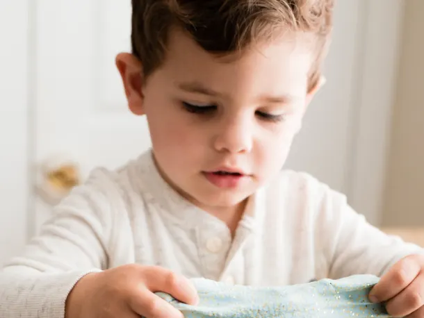
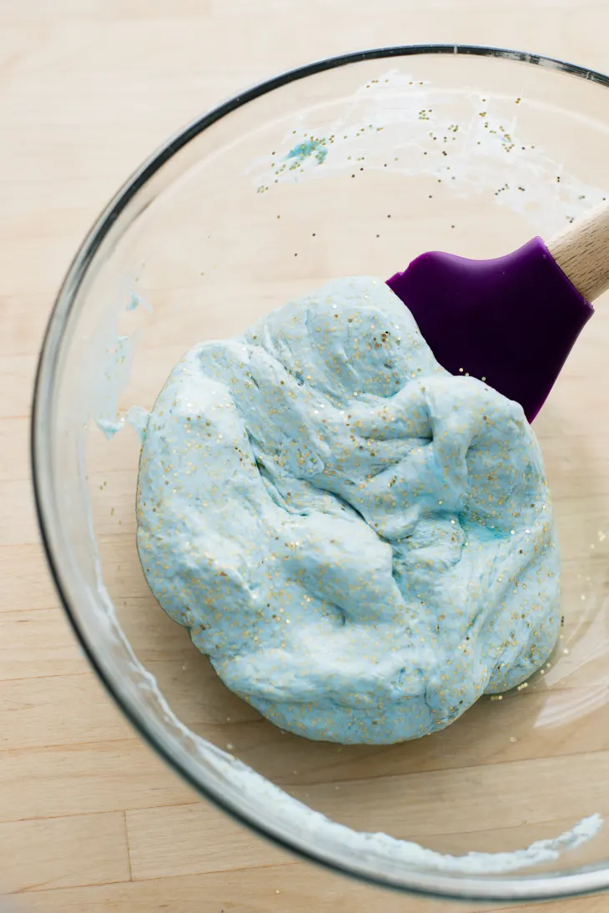

How To Make 3-Ingredient Slime Without Borax
All you need to make safe slime at home without borax is glue, baking soda, contact solution, and a little glitter. It's a fun and safe activity for kids.
Home

It was my 5-year-old who introduced me to homemade slime via YouTube — something she’s allowed to watch during her allotted screen time. I was surprised by how easy it was to make. The first recipe we tried involved Borax, something I had on hand from an experiment in making my own laundry detergent (this was before I had two children, obviously). The resulting slime was fine, but smelled noxious and I ended up throwing it away after about an hour of play.
Repeated requests for more slime led me down a rabbit hole of slime recipes — slime made with yogurt, another with cornstarch and glue, and a disastrous batch made with shaving cream.
Either the recipe didn’t hold up well to play or they didn’t work at all. That’s until we found this one. This slime recipe calls for just three ingredients — school glue, baking soda, and contact solution — each of which we have on hand at all times.
Why Am I Reading About Slime on Kitchn?
Fair question, dear reader. Consider slime an example of one of the many non-cooking projects that happen in the kitchen. Making slime, like making pasta from scratch, is one of the ways I engage with my kids in the kitchen.
Plus making slime is fun (and a great activity to do during winter break). You’ll be surprised how quickly the slime comes together and how long your kids will play with the slime afterwards.
Because the winter is loooooonnnnnggg. Slime is an ideal quiet-play activity. We can mix some up and I can work next to them at the kitchen table while they play.

Is This Slime Safe?
Borax is a popular ingredient for making slime, but beyond my own negative experience with stinky borax-based slime, there is pause for concern in using Borax to make slime. Borax is a chemical cleaner and unchecked repeated and prolonged exposure to it is bad for your skin and potentially bad for your health. This is paraphrasing from a box of Borax.
Several news articles have suggested that Borax play is fine in small doses, if the Borax is diluted and everyone wears gloves. Personally I’d rather not take any chances and use this baking soda and saline solution instead. Besides, it makes a more supple and easy-to-squeeze slime.
5 Tips for Slime Creation and Play
- Buy travel-sized contact solution if you don’t have a contact lens wearer at home to avoid waste. The two-ounce travel-sized bottle is enough for one batch of slime and less expensive than a full-sized bottle.
- The dollar store is a great place to buy glue, baking soda, glitter, tablecloths, etc. to make slime at home affordable.
- Cover your table with an oilcloth or outdoor tablecloth, which makes for easier cleanup. Plastic placemats or flexible cutting boards are also great for protecting surfaces during slime play.
- Remember to wash your hands and avoid touching your mouth while playing with any kind of slime.
- Slime will become harder to clean off once it dries (it is glue, after all!) so soak mixing tools in warm soapy water while you play, and be sure to give your play space a quick wipe-down when you are done.
How To Make 3-Ingredient Slime Without Borax
Makes 2 cups
INGREDIENTS
- 2 (4-ounce) bottles washable school glue, such as Elmer's (see note for variations)
- 1 to 2 drops liquid food coloring (optional)
- 1/4 cup glitter (optional)
- 1 teaspoon baking soda
- 2 to 3 tablespoons saline solution (i.e., contact lens solution), divided
EQUIPMENT
- Measuring spoons
- Glass or plastic mixing bowl
- Mixing spoon
- Airtight container for storage
INSTRUCTIONS
- Color the glue (optional): Pour the glue into a medium bowl. Stir in the food coloring and glitter, if desired. This mixture doesn't need to be homogeneous, as you'll mix it even more after adding the baking soda.
- Add the baking soda: Add the baking soda to the glue mixture and stir until smooth.
- Add the contact lens solution: Pour in 2 tablespoons of the contact lens solution and stir slowly. The mixture should begin to harden, becoming stringy.
- Mix until a ball forms: Continue mixing slowly until a ball of slime forms.
- Knead by hand: Pick up the slime and work between your two hands, until smooth. If the slime is particularly slimy, work in another 1/2 tablespoon of contact lens solution as needed.
- PLAYING WITH SLIME! Once mixed, you can play with the slime immediately or store for future play.
- Hidden Figures: Fold small figures or cars into the slime and ask your children to find them.
- Polka-Dot Slime: Fold 10 to 15 soft pom-poms into clear slime (no coloring, no glitter)
- Cut-and-Measure Slime: Provide your kids with a metal or plastic ruler and kid-safe scissors. See who can stretch their slime the furthest. Or practice counting and cut the slime into 10-inch pieces.
RECIPE NOTES
- Storage: Store in an airtight container at room temperature.
- Glitter glue slime: Glitter glue is wonderful way to add glitter to your slime and it is much less messy, if you can find it. Skip the optional glitter called for here if using glitter glue.